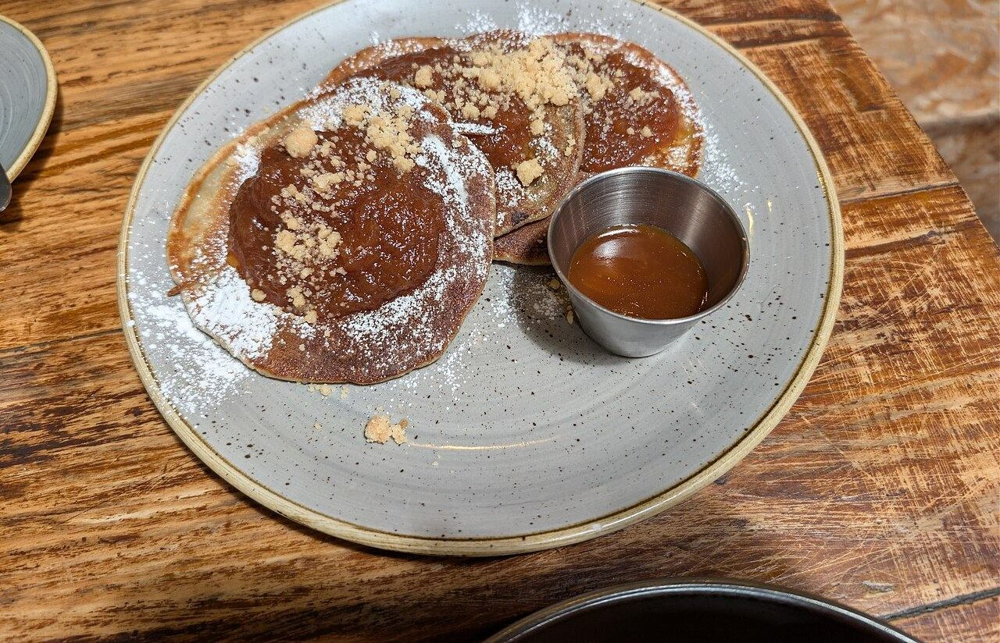
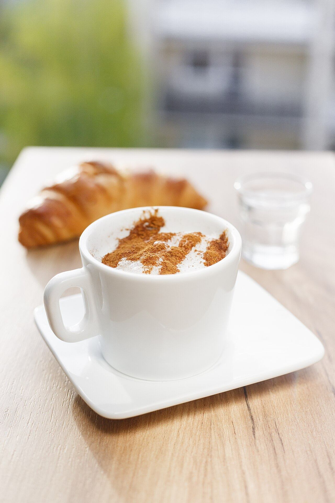
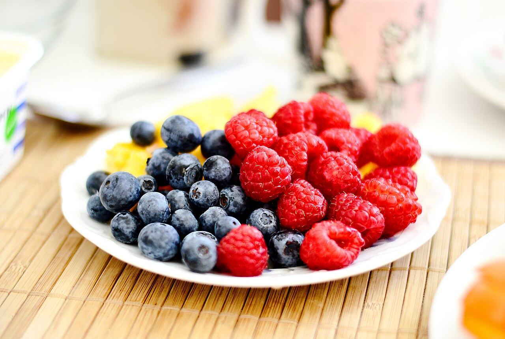

ひと皿のこちらがわ
「パンケーキの向こうがわ」は、宮崎県都城市甲斐元町にあるパンケーキ専門のカフェです。

Photo: イメージひと皿の向こうに、少しゆっくりした時間がありますように。
お店のこと
- 店名
- パンケーキの向こうがわ
- 業態
- パンケーキ専門のカフェ
- 所在地
- 宮崎県都城市甲斐元町
店主のことや、お店の歩みについては、Instagram またはお電話でお尋ねください。

Photo: イメージ
Photo: イメージご来店の前に
営業時間・定休日は Instagram またはお電話(0986-57-1668)でご確認ください
駐車場・席数などはお電話でお問い合わせください